Apache NetBeans
Apache NetBeansLatest release
NetBeans Platform Test Infrastructure Tutorial
| This tutorial needs a review. You can edit it in GitHub following these contribution guidelines. |
During development of NetBeans Platform 6.5, an effort was made to improve the testing infrastructure provided for NetBeans Platform applications. Prior to that, many small magical build scripts and other configuration files were needed when setting up the test infrastructure for NetBeans Platform applications.
Since then, however, there is inherent support for testing NetBeans Platform application within the NetBeans Platform’s build harness scripts. Therefore, unit and functional tests for NetBeans Platform applications are now supported out of the box. This simplification of the testing infrastructure is sometimes referred to as "simpletests", since it greatly simplifies the work necessary to set up such tests for your application.
In this tutorial, you are introduced to setting up the "simpletests" infrastructure and to using the NetBeans Platform’s unit testing and functional testing frameworks. These are:
-
* NB Junit.* NetBeans Platform extension to the JUnit testing framework.
-
* Jelly Tools.* NetBeans Platform extension to the Jemmy testing framework.
By the end of this tutorial, you should know how to set up the NetBeans Platform testing infrastructure, how to create unit tests, and how to create functional tests.
Setting Up the Testing Infrastructure
When setting up the testing frameworks, you need to enable certain modules that are disabled by default. Then you need to create folders and files in your source structure, where the libraries and tests will live.
If you want to try out these instructions on an actual application prior to trying them out on your own sources, you can use the NetBeans Platform Paint Application, which you can get from the Samples category in the New Project wizard (Ctrl-Shift-N).
-
In the Projects window, right-click your application and choose Properties. In the Project Properties dialog, click "Libraries".
1. Check the "harness" box, adding the entire harness cluster, which provides all the testing modules provided by the NetBeans Platform:
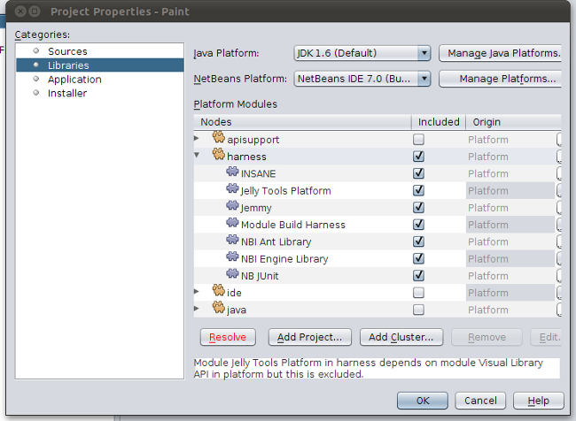
-
Click the "Resolve" button, shown above, which will add modules from the "platform" cluster to your application, as needed by the modules in the "harness" cluster. Notice that there are now no messages about excluded modules and that the Resolve button has disappeared:
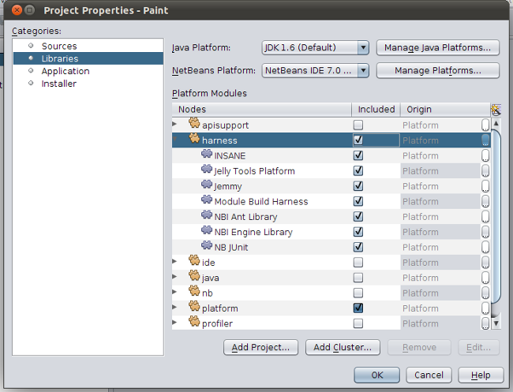
Now you must set up a source structure for unit testing and functional testing in the modules that need to be tested. In other words, the steps below do not apply to the application’s source structure, but to the modules that you need to test.
-
Switch to the Files window (Ctrl-2), and expand the module’s main node.
-
If it does not exist, create a new folder named "test", within the module’s main folder.
1. Within the "test" folder, create a folder named "qa-functional". Underneath "qa-functional", create a folder named "src". You can use the New Folder wizard for these purposes, as follows:
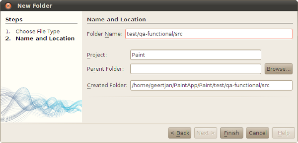
-
Within the "test" folder, create a folder named "unit". Underneath "unit", create a folder named "src".
1. Check that the Files window shows the "test" folder structure as shown below:
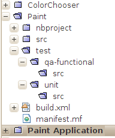
-
Restart the IDE.
1. In the Projects window notice that there are now two new nodes for your test packages and two new nodes for adding the test libraries to the classpath of the module:
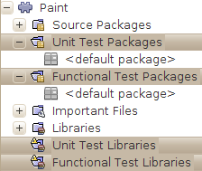
-
Right-click the "Unit Test Libraries" node and choose "Add Missing Test Dependencies". Then add "JUnit 4" and "NB JUnit". Right-click the "Functional Test Libraries" node and choose "Add Missing Test Dependencies". Then add "JUnit 4", "NB JUnit", "Jemmy", and "Jelly Tools Platform".
If you use "Add Missing Test Dependencies" instead of "Add Unit Test Dependency" and "Add Functional Test Dependency", NB JUnit’s recursive dependencies are properly configured. Otherwise INSANE will not be available, which can cause linkage errors when running tests.
-
Check that the Projects window shows the test library dependencies as shown below:
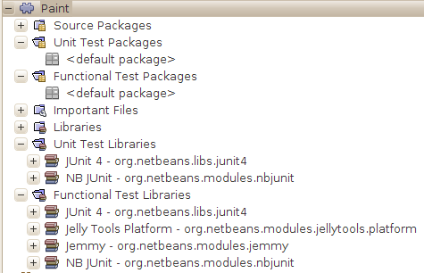
You have now set up everything needed for creating unit tests and functional tests on the NetBeans Platform.
Unit Testing on the NetBeans Platform
The NetBeans Platform’s extension to JUnit is named " NB JUnit". It is a separate library with additional support for memory leak tests, deadlock tests, and extended use of logging. More info and motivation can be found at Test Patterns in Java. The basic test class for NB JUnit is NbTestCase.
An example unit test for the NetBeans Platform Paint sample:
import org.netbeans.junit.*;
import org.netbeans.paint.PaintCanvas;
public class PaintCanvasTest extends NbTestCase {
public PaintCanvasTest(java.lang.String testName) {
super(testName);
}
public void testSetDiam() {
PaintCanvas paintCanvas = new PaintCanvas();
paintCanvas.setBrush(10);
assertEquals("Brush diameter should be set.", 10, paintCanvas.getBrushDiameter());
}
}Create the class above in a package in the Unit Test Packages node in the Projects window. Then right-click the "Paint" project node and choose "Test". If the test is successful, you will see this:
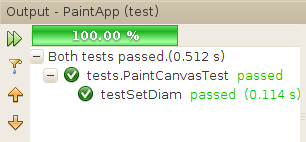
If the test fails, you will see this:
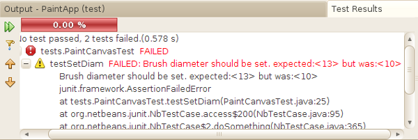
In the Files window (Ctrl-2), you can find the test results:
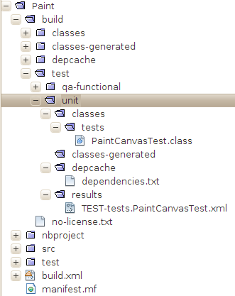
Typical questions relating to unit testing on the NetBeans Platform relate to specific NetBeans API objects and the central registry (also known as "System FileSystem"). For information on how to test these parts of your application, see the following resources:
Functional Testing on the NetBeans Platform
The NetBeans Platform’s extension to Jemmy is named JellyTools. It provides a set of operators that are tailored to UI components used specifically in the NetBeans Platform, such as TopComponentOperator .
An example functional test for the NetBeans Platform Paint sample.
import junit.framework.Test;
import org.netbeans.jellytools.JellyTestCase;
import org.netbeans.jellytools.MainWindowOperator;
import org.netbeans.jellytools.TopComponentOperator;
import org.netbeans.jellytools.actions.Action;
import org.netbeans.jemmy.operators.JButtonOperator;
import org.netbeans.jemmy.operators.JSliderOperator;
import org.netbeans.junit.NbModuleSuite;
import org.netbeans.junit.NbModuleSuite.Configuration;
/**
* A Test based on JellyTestCase. JellyTestCase redirects Jemmy output
* to a log file provided by NbTestCase. It can be inspected in results.
* It also sets timeouts necessary for NetBeans GUI testing.
*
* Any JemmyException (which is normally thrown as a result of an unsuccessful
* operation in Jemmy) going from a test is treated by JellyTestCase as a test
* failure; any other exception - as a test error.
*
* Additionally it:
* - closes all modal dialogs at the end of the test case (property jemmy.close.modal - default true)
* - generates component dump (XML file containing components information) in case of test failure (property jemmy.screen.xmldump - default false)
* - captures screen into a PNG file in case of test failure (property jemmy.screen.capture - default true)
* - waits at least 1000 ms between test cases (property jelly.wait.no.event - default true)
*
*/
public class OverallTest extends JellyTestCase {
/** Constructor required by JUnit */
public OverallTest(String name) {
super(name);
}
/** Creates suite from particular test cases. You can define order of testcases here. */
public static Test suite() {
Configuration testConfig = NbModuleSuite.createConfiguration(OverallTest.class);
testConfig = testConfig.addTest("testBrushSize", "testPainting", "testClear", "testColorChooser");
testConfig = testConfig.clusters(".*").enableModules(".*");
return NbModuleSuite.create(testConfig);
}
/** Called before every test case. */
public void setUp() {
System.out.println("######## "+getName()+" #######");
}
// Add test methods here, they have to start with 'test' name:
/** Test brush size setting. */
public void testBrushSize() {
new Action("Window|New Canvas", null).perform();
JSliderOperator slider = new JSliderOperator(MainWindowOperator.getDefault());
slider.scrollToMaximum();
slider.scrollToMinimum();
slider.scrollToMaximum();
}
/** Test painting. */
public void testPainting() {
TopComponentOperator tcOper = new TopComponentOperator("Image");
int x = tcOper.getCenterX();
int y = tcOper.getCenterY();
tcOper.clickMouse(x, y, 1);
for (int i = 0; i < 50; i++) {
tcOper.dragNDrop(x, y, x + 1, y + 1);
x++;
y++;
}
for (int i = 0; i<50; i++) {
tcOper.dragNDrop(x, y, x - 1, y);
x--;
}
for (int i = 0; i<50; i++) {
tcOper.dragNDrop(x, y, x, y - 1);
y--;
}
}
/** Test clear button. */
public void testClear() {
new JButtonOperator(new TopComponentOperator("Image"), "Clear").push();
}
public void testColorChooser() {
fail("Not yet implemented.");
}
}Create the class above in a package in the Functional Test Packages node in the Projects window. Then right-click the "Paint" project node and choose "Test". The application starts up and the specified functional tests are performed:
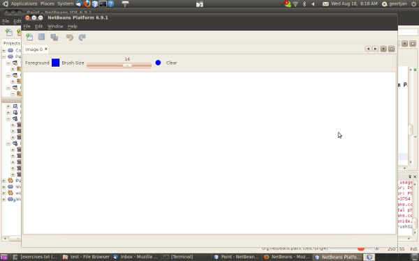
Then the test results are shown:
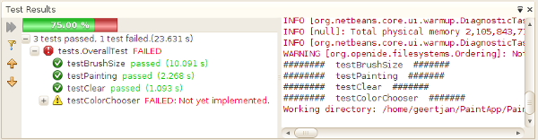
In the Files window (Ctrl-2), you can find the test results:
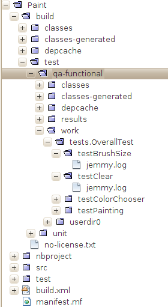
Code Coverage on the NetBeans Platform
Via a plugin, it is easy to use the NetBeans Platform with Cobertura.
Take the following steps to use Cobertura for calculating the percentage of code accessed during unit testing and functional testing:
-
In the IDE, go to Tools | Plugins and install "Cobertura Module Test Coverage".
-
Go to the command line and browse to the "Paint" project folder, that is, browse to the module project folder where the tests have been run.
1. Enter the following on the command line:
ant coverage-report-
You will see output such as the following:
...
...
...
[junit] Cobertura: Loaded information on 8 classes.
[junit] Cobertura: Saved information on 8 classes.
[junit] Test tests.PaintCanvasTest FAILED
test-coverage:
coverage-report:
[cobertura-report] Cobertura 1.9.3 - GNU GPL License (NO WARRANTY) - See COPYRIGHT file
[cobertura-report] Cobertura: Loaded information on 8 classes.
[cobertura-report] Report time: 448ms
BUILD SUCCESSFUL
Total time: 9 seconds-
In the IDE, within the Paint project, expand the "Important Files" node and then expand the "Build Script" node. A list of nodes is displayed for the targets defined in the build script. Find the target named "display-coverage-report", right-click it, and choose "Run Target". The following is displayed in the browser:
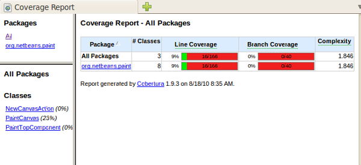
-
Enter the following on the command line:
ant coverage-report-qa-functional-
You will see output such as the following:
...
...
...
testcoverage-restore-default:
[delete] Deleting: /home/geertjan/PaintApp/build/cluster/modules/org-netbeans-paint.jar
[copy] Copying 1 file to /home/geertjan/PaintApp/build/cluster
testcoverage-restore-specified:
test-coverage-restore:
test-coverage-qa-functional:
coverage-report-qa-functional:
[cobertura-report] Cobertura 1.9.3 - GNU GPL License (NO WARRANTY) - See COPYRIGHT file
[cobertura-report] Cobertura: Loaded information on 8 classes.
[cobertura-report] Report time: 563ms
BUILD SUCCESSFUL
Total time: 23 seconds-
The results can be found in the Files window (Ctrl-2):

-
Open the index file to see the result:
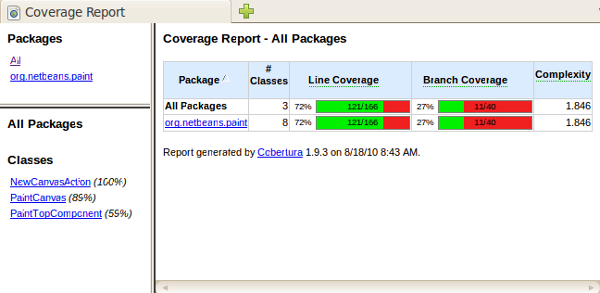
Further reading, advice, and warnings related to code coverage can be found here.
See Also
This concludes the NetBeans Platform Testing Tutorial. This document has described how to add unit testing and functional testing functionality to a NetBeans Platform application. For more information about testing on the NetBeans Platform, see the following resources: